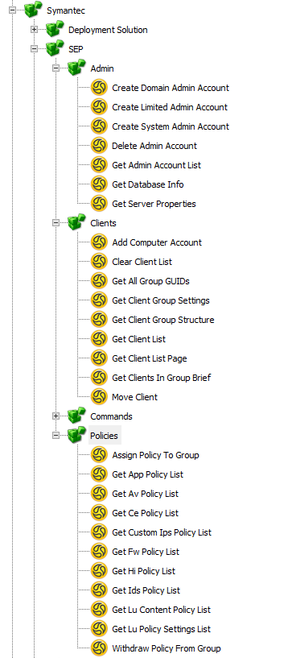
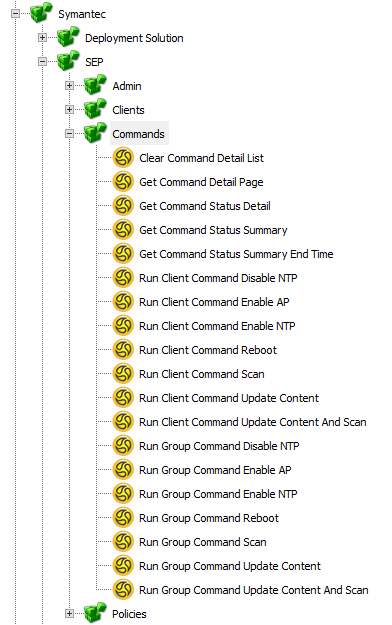
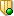
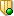

If you create a new Project and add the Integration Library "Symantec.Components.SEP.dll"
[Install Drive]:\Program Files\Symantec\Workflow\Shared\components\Symantec.Components.SEP.dll
This will then allow you to use the Components within your Process.
Properties
3 new Properties will be added to your Project when you drag on a component.
Project Properties
| Name | Value |
|---|---|
| SEPUsername | sepuser |
| SEPPassword | *********** |
| SEPURL | https://sepserver:8443/spc-webservice |
Update these to values that will work in your environment.
Components


Symantec
SEP
Admin
- Create Domain Admin Account
- Create Limited Admin Account
- Create System Admin Account
- Delete Admin Account
- Get Admin Account List
- Get Database Info
- Get Server Properties
Clients
- Add Computer Account
- Clear Client List
- Get All Group GUIDs
- Get Client Group Settings
- Get Client Group Structure
- Get Client List
- Get Client List Page
- Get Clients In Group Brief
- Move Client
Commands
- Clear Command Detail List
- Get Command Detail Page
- Get Command Status Detail
- Get Command Status Summary
- Get Command Status Summary End Time
- Run Client Command Enable AP
- Run Client Command Reboot
- Run Client Command Scan
- Run Client Command Update Content
- Run Client Command Update Content And Scan
- Run Group Command Enable AP
- Run Group Command Reboot
- Run Group Command Scan
- Run Group Command Update Content
- Run Group Command Update Content And Scan
- Run Client Command Disable NTP
- Run Client Command Enable NTP
- Run Group Command Disable NTP
- Run Group Command Enable NTP
Policies
- Assign Policy To Group
- Get App Policy List
- Get Av Policy List
- Get Ce Policy List
- Get Custom Ips Policy List
- Get Fw Policy List
- Get Hi Policy List
- Get Ids Policy List
- Get Lu Content Policy List
- Get Lu Policy Settings List
- Withdraw Policy From Group
Updated Versions
With the release of  WF 8.1 RU5 a selection of  SEP 14 APIs were updated into a Components Library
WF 8.1 RU5 a selection of  SEP 14 APIs were updated into a Components Library